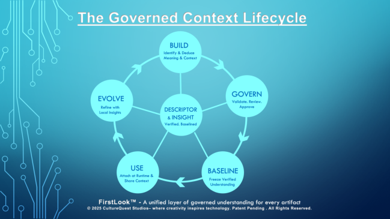
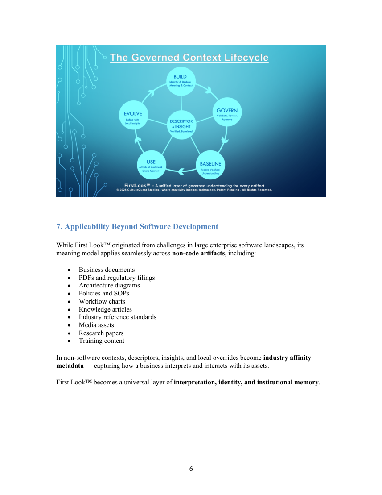

ABSTRACT Enterprises rely on vast ecosystems of artifacts — code files, documents, workflows, diagrams, operational policies, and unstructured knowledge. Yet nearly all artifacts suffer from the same structural limitation.
An artifact rarely carries its own meaning at the moment of first contact. "When someone encounters an artifact for the first time, it does not tell them what it is, why it exists, or how to interpret it." People waste time deciphering purpose, context, dependencies, and relevance. Organizations lose knowledge as contributors change. AI systems operate with incomplete understanding. First Look™ solves this by introducing a governed identity and context layer for every artifact, regardless of domain. This layer assigns each artifact a stable identity, a governed descriptor, a governed insight, and optional local insights contributed by individual users.
This layer travels with artifacts across environments and tools without modifying the artifact itself.
It establishes a governed, versioned foundation for meaning — applicable to software ecosystems, enterprise documentation, regulated industries, and knowledge workflows.
Meaning becomes structured, traceable, and persistent — without modifying the artifact itself.
1. INTRODUCTION Modern engineering environments operate at scale, but understanding has not kept pace.
As systems evolve, documentation becomes stale, tribal knowledge disappears, and interpreting artifacts requires institutional memory.
Across industries, the need for instant, reliable understanding continues to grow. Whether modernizing legacy systems, navigating distributed architectures, onboarding new teams, or maintaining compliance, the time spent reconstructing meaning is one of the largest hidden operational costs.
Despite advances in tooling and automation, fundamental questions persist:
• What is this artifact? • Why does it exist? • How should I interpret it? • What are the risks or dependencies? • Has its meaning evolved over time?
First Look™ introduces Context Control — a structured, governed method of attaching meaning to artifacts throughout their lifecycle.
2. FIRST LOOK™ : A NEW MEANING INFRASTRUCTURE
2.1 Artifact Identity Layer
Every artifact receives a stable, non-intrusive identity — the equivalent of a durable “name tag” that enables consistent recognition across tools, repositories, and organizational boundaries.
This identity persists even as the artifact moves, refactors, or is reorganized.
2.2 Baseline Descriptor (Curated Meaning)
A descriptor is the official, governed one-liner summary of the artifact:
• Human-authored or AI-assisted • Curated • Reviewed • Versioned • Baseline-protected
Descriptors define the authoritative meaning of the artifact.
2.3 Baseline Insight (Interpretive Meaning)
Insights complement descriptors by offering a more interpretive or analytical perspective. A compact brief introduction of the artifact. Unlike traditional ephemeral AI outputs, insights in First Look™ are:
• baseline-bound • governed • versioned • reviewed before incorporation
Insights differ from descriptors in tone and purpose but follow the same governance discipline.
Together, descriptors and insights form the unified, official meaning of an artifact — its governed context baseline.
2.4 Local Insights (Personal Layer) Users can attach local insights without altering the baseline. These are persistent but rolling, personal unless role visibility is granted, and useful for metadata, terminology, affinity words, and contextual cues.
3. DAY-0 LIFECYCLE: ESTABLISHING MEANING On Day-0, descriptors and insights are created manually or with AI assistance, reviewed through governance, and baselined as official meaning.
When an artifact enters First Look™, the following occurs:
1. Descriptor and insight are created
o manually authored, or o AI-assisted 2. Governance review
A role-based review validates accuracy, relevance, and compliance. 3. Baseline approval
Both descriptor and insight are baselined as the first official version of the artifact’s meaning.
This establishes a meaning foundation that remains stable and traceable for the life of the artifact.
4. Context Evolution Across the Artifact’s Life As the artifact evolves, so may its meaning — but under strict governance. 4.1 Descriptor Evolution If the artifact changes, the descriptor:
• may remain valid, or • may require an update
In both cases: Any descriptor change must pass governance before becoming the new baseline.
No descriptor update becomes official without approval.
4.2 Insight Evolution Insights behave similarly:
• changes may or may not be required • any update requires governance to become baseline
Additionally, First Look™ supports an optional insight regeneration process, manually triggered or scheduled, particularly useful when artifacts evolve significantly.
4.3 Governance as the Backbone Governance ensures that meaning:
• evolves deliberately • aligns with organizational accuracy requirements
• remains compliant with audit and risk protocols • never drifts uncontrolled
Meaning is maintained with the same rigor used for code, changes, and releases.
5. Local Overrides: Personal & Team-Level Meaning
Not all context belongs in the global baseline.
First Look™ enables each user to attach Local Insights — personal notes, contextual cues, domain vocabulary, or reminders relevant to their role.
Key properties of Local Insights:
• Persistent but rolling (bounded by a regulated limit) • When the limit is reached, the oldest entries fall off automatically • Do not alter or influence the baseline descriptor or baseline insight • Are scoped to the user, unless permission grants broader visibility • Can reflect team interpretations, interim findings, or domain-specific metadata • Can be aggregated for deferred evaluation for refinement to baseline descriptor and/or insights
Role-Based Visibility
Organizations may allow certain roles (leads, architects, auditors, SMEs) to view the complete set of local insights attached to an artifact.
This provides valuable human context without polluting the governed baseline.
6. THE GOVERNED CONTEXT LIFECYCLE The following diagram represents the conceptual lifecycle of governed meaning within First Look™:
• BUILD : Identify & Deduce Meaning and Context • GOVERN : Validate, Review, Approve • BASELINE : Freeze Verified Understanding • USE : Attach at Runtime & Share Context • EVOLVE : Propose Descriptor/Insight Updates based on aggregated local insights This lifecycle ensures governed meaning persists and evolves responsibly across software and non-software artifacts.
7. Applicability Beyond Software Development
While First Look™ originated from challenges in large enterprise software landscapes, its meaning model applies seamlessly across non-code artifacts, including:
• Business documents • PDFs and regulatory filings • Architecture diagrams • Policies and SOPs • Workflow charts • Knowledge articles • Industry reference standards • Media assets • Research papers • Training content
In non-software contexts, descriptors, insights, and local overrides become industry affinity metadata — capturing how a business interprets and interacts with its assets.
First Look™ becomes a universal layer of interpretation, identity, and institutional memory.

8. Value Proposition
8.1 For Organizations
• Reduced onboarding time • Consistent understanding across teams • Unified meaning across all tools and repositories • Traceable evolution of knowledge • Improved modernization capability • Stronger audit and compliance posture
8.2 For Individuals
• Instant clarity when touching unfamiliar artifacts • Ability to personalize interpretation without affecting global truth • A guided entry point into complex systems
8.3 For AI Systems
• Access to structured, stable contextual metadata • Improved reasoning across artifacts • Reduced hallucination and misinterpretation • Better alignment with organizational standards
9. First Look™ as Meaning Infrastructure
Just as version control brought order to code evolution and CI/CD brought discipline to delivery, First Look™ brings governance to meaning itself and introduces Meaning and Context control paradigm to the digital ecosystem.
Artifacts no longer exist as passive objects and don’t need you to hustle through a host of scattered knowledge pieces. They become self-identifying entities with governed, evolving meaning.
This represents a foundational shift in how enterprises retain knowledge and collaborate in complex environments.
10. Intellectual Property Notice
The concepts, systems, and methods described in this white paper are protected under a filed U.S. non-provisional patent application. This document intentionally avoids revealing implementation details, internal data structures, algorithms, or processes covered by the confidential portions of the filing.
© 2025 CultureQuest Studios LLC — All Rights Reserved. Patent Pending.
11. CONTACT founder@culturequeststudios.com CultureQuest Studios LLC Culturequeststudios.com Shaping Tomorrow’s Systems — with the Human Element at Their Core.
